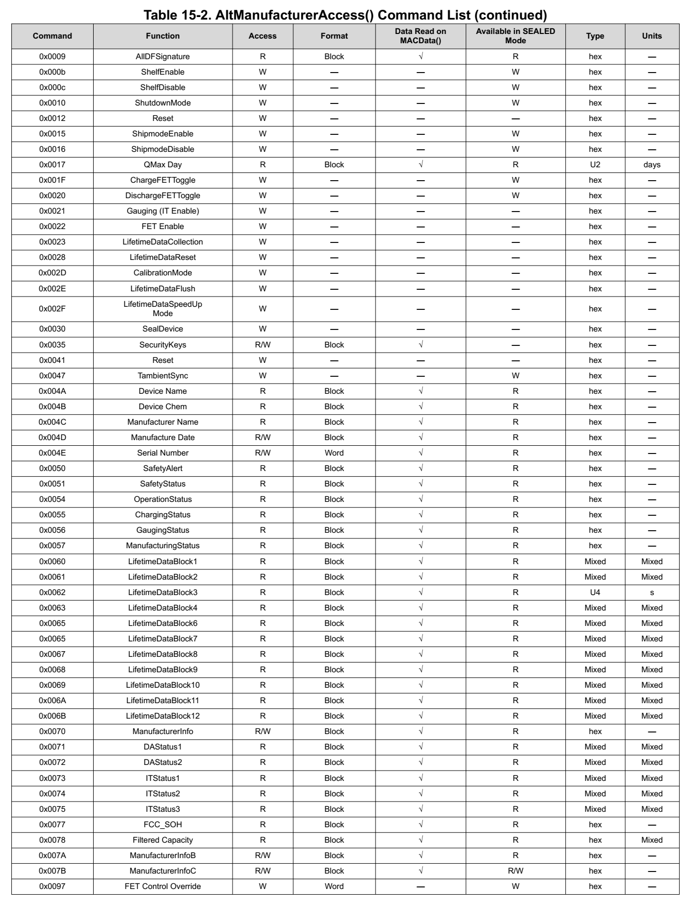
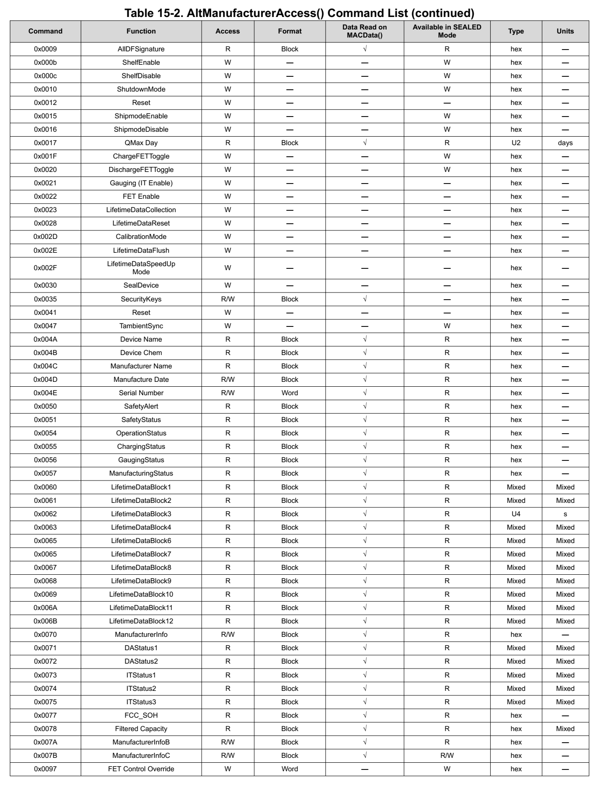
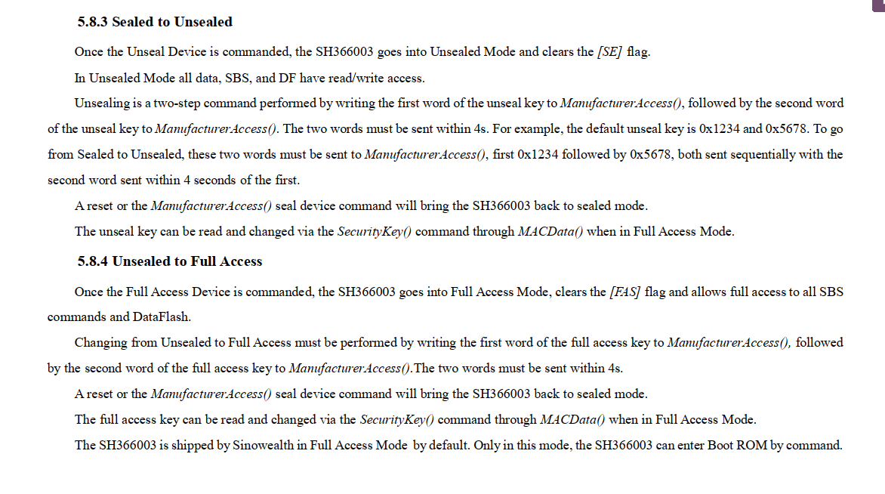
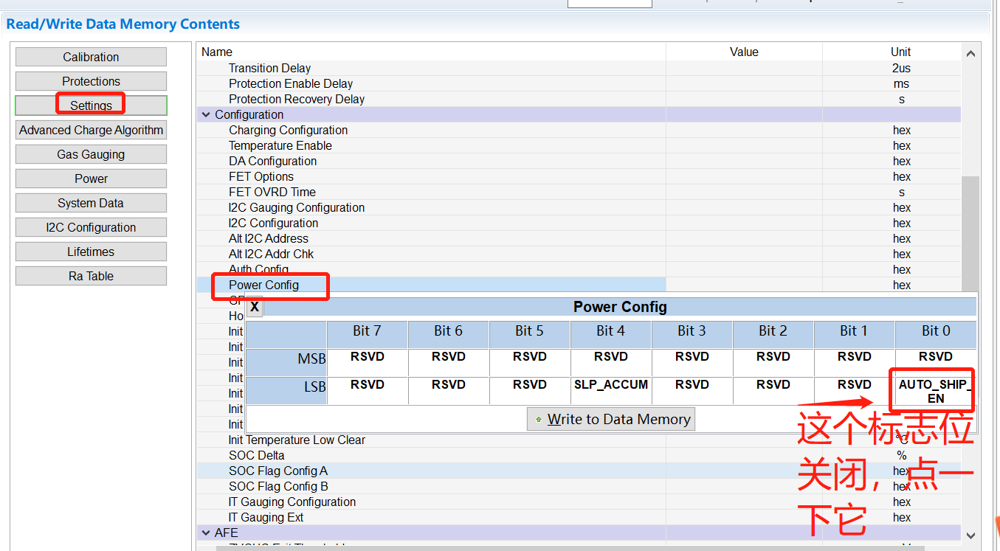

概述
该电量计用在A6650上面。
参考
Manufacturer Access System(制造商准入系统MAC)
AltManufacturerAccess()提供了在MAC（制造商访问系统）中读取和写入数据的方法，bq27z746中很多寄存器都是需要通过mac中读写的，以下是读写实例：
The MAC command is sent via AltManufacturerAccess() by a block protocol. The result is returned on AltManufacturerAccess() via a block read. Commands are sent by writing to registers 0x00/0x01 or 0x3E/0x3F. 0x3E and 0x3F work the same as 0x00 and 0x01, but are primarily intended for block writes and reads.
Example: Send a MAC Gauging() to enable IT via AltManufacturerAccess().
With Impedance Track disabled, send Gauging() (0x0021) to AltManufacturerAccess()
a. Command Write, start address = 0x3E (or 0x00). Data = 21 00 (data must be sent in little endian).向3f写0x0021
IT is enabled, ManufacturingStatus()[GAUGE_EN] = 1.
Example: Read Chemical ID() (0x0006) via AltManufacturerAccess().
Send Chemical ID() to AltManufacturerAccess().
a. Command Write, start address = 0x3E (or 0x00). Data sent = 06 00 (data must be sent in little endian).先向3f写0x0006
Read the result from AltManufacturerAccess() and MACData(). 读取MACData 0x40寄存器
读写函数：
#define BQ27Z746_MAC 0x3E
#define BQ27Z746_MACDATA 0x40
static int bq27z746_reg_mac_read(unsigned short reg, unsigned char *val, int size)
{
struct i2c_client *client = g_batt_info->i2c_client;
s32 status;
u16 addr = 0;
u8 data[36] = {0};
int i;
int try_cnt = 3;
int ret = 0;
mutex_lock(&g_batt_info->lock);
while (--try_cnt > 0) {
addr = (u16)reg;
status = i2c_smbus_write_word_data(client, BQ27Z746_MAC, addr);
if (status < 0) {
bq27z746_set_i2c_fault_status();
BAT_MONITOR_ERR("write reg: %x failed\n", reg);
ret = -1;
continue;
}
status = i2c_smbus_read_i2c_block_data(client, BQ27Z746_MACDATA, size, data);
if (status < 0) {
bq27z746_set_i2c_fault_status();
BAT_MONITOR_ERR("read reg: %x failed\n", reg);
ret = -1;
continue;
}
if (status != size) {
bq27z746_set_i2c_fault_status();
BAT_MONITOR_ERR("data size is not right: %d:%d\n", status, size);
ret = -1;
continue;
}
#if 0
BAT_MONITOR_DBG("--------- read reg: %x, size: %d:%d ------\n", reg, status, size);
for (i = 0; i < status; i++)
{
printk(KERN_INFO " %02x", data[i]);
if ((i + 1) % 10 == 0)
pr_info("\n");
}
BAT_MONITOR_DBG("-----------------------------\n");
#endif
bq27z746_reset_i2c_fault_cnt();
memcpy(val, data, status);
ret = 0;
break;
}
mutex_unlock(&g_batt_info->lock);
return ret;
}
AltManufacturerAccess() Command List
 

问题点调试
1.如何解密IC并reset芯片
如果需要修改某些寄存器或者reset时，首先需要解密，解密操作如下：

中颖的电量计支持软件解锁，而bq27z746不支持：

default unseal key is 0x1234 and 0x5678. To go from Sealed to Unsealed, these two words must be sent to ManufacturerAccess(), first 0x1234 followed by 0x5678, both sent sequentially with the second word sent within 4 seconds of the first
Changing from Unsealed to Full Access must be performed by writing the first word of the full access key to ManufacturerAccess(), followed by the second word of the full access key to ManufacturerAccess().The two words must be sent within 4s.
中颖软件支持sys节点解密如下：
#define BQ27Z746_SEALED_CMD 0x00
#define BQ27Z746_SEALED_DATA1 0X1234
#define BQ27Z746_SEALED_DATA2 0X5678
#define BQ27Z746_FULL_ACESS_DATA1 0X90AB
#define BQ27Z746_FULL_ACESS_DATA2 0XCDEF
static int __maybe_unused bq27z746_sealed(void)
{
int ret;
unsigned char val[2] = {0};
ret = bq27z746_reg_mac_read(BQ27Z746_reg_SealDevice, val, sizeof(val));
return ret;
}
static int __maybe_unused bq27z746_unsealed(void)
{
#if 0
int ret;
unsigned char val[2] = {0};
ret = bq27z746_reg_write_word_data(BQ27Z746_SEALED_CMD, BQ27Z746_SEALED_DATA2);
if (ret < 0)
return ret;
ret = bq27z746_reg_mac_read(BQ27Z746_SEALED_DATA1, val, sizeof(val));
if (ret < 0)
return ret;
#else
int ret;
unsigned char val[2] = {0};
struct i2c_client *client = g_batt_info->i2c_client;
mutex_lock(&g_batt_info->lock);
do {
ret = i2c_smbus_write_word_data(client, BQ27Z746_SEALED_CMD, BQ27Z746_SEALED_DATA2);
if (ret < 0) {
bq27z746_set_i2c_fault_status();
break;
}
ret = i2c_smbus_write_word_data(client, BQ27Z746_MAC, BQ27Z746_SEALED_DATA1);
if (ret < 0) {
bq27z746_set_i2c_fault_status();
break;
}
ret = i2c_smbus_read_i2c_block_data(client, BQ27Z746_MACDATA, sizeof(val), val);
if (ret < 0) {
bq27z746_set_i2c_fault_status();
break;
}
bq27z746_reset_i2c_fault_cnt();
} while(0);
mutex_unlock(&g_batt_info->lock);
#endif
return ret;
}
static int __maybe_unused bq27z746_full_access(void)
{
#if 0
int ret;
unsigned char val[2] = {0};
ret = bq27z746_reg_write_word_data(BQ27Z746_SEALED_CMD, BQ27Z746_FULL_ACESS_DATA2);
if (ret < 0)
return ret;
ret = bq27z746_reg_mac_read(BQ27Z746_FULL_ACESS_DATA1, val, sizeof(val));
if (ret < 0)
return ret;
#else
int ret;
unsigned char val[2] = {0};
struct i2c_client *client = g_batt_info->i2c_client;
mutex_lock(&g_batt_info->lock);
do {
ret = i2c_smbus_write_word_data(client, BQ27Z746_SEALED_CMD, BQ27Z746_FULL_ACESS_DATA2);
if (ret < 0) {
bq27z746_set_i2c_fault_status();
break;
}
ret = i2c_smbus_write_word_data(client, BQ27Z746_MAC, BQ27Z746_FULL_ACESS_DATA1);
if (ret < 0) {
bq27z746_set_i2c_fault_status();
break;
}
ret = i2c_smbus_read_i2c_block_data(client, BQ27Z746_MACDATA, sizeof(val), val);
if (ret < 0) {
bq27z746_set_i2c_fault_status();
break;
}
bq27z746_reset_i2c_fault_cnt();
} while(0);
mutex_unlock(&g_batt_info->lock);
#endif
return ret;
}
/* attr for debug */
static ssize_t monitor_show_sealed(struct device *dev,
struct device_attribute *attr, char *buf)
{
unsigned int status = 0;
int ret;
int sealed = 0;
int full_access = 1;
ret = bq27z746_get_op_status(&status);
if (status & (1 << 8)) {
sealed = 1;
}
if (status & (1 << 9)) {
full_access = 0;
}
ret = sprintf(buf, "status: 0x%x [%s] [%s]\n", status,
sealed ? "sealed" : "unsealed",
full_access ? "full access" : "not full access");
return ret;
}
static ssize_t monitor_store_sealed(struct device *dev, struct device_attribute *attr,
const char *buf, size_t count)
{
int val;
int ret;
ret = sscanf(buf, "%d", &val);
if (ret != 1)
return count;
if (val == 2) {
bq27z746_full_access();
}
else if (val == 1) {
bq27z746_unsealed();
}
else {
bq27z746_sealed();
}
return count;
}
2.如何退出自动船运模式
目前电量计都打开了自动进入船运模式功能，如果超过3天不开机，电池就会自动进入船运模式。船运模式的特点是电池无输出，功耗极低，但是能记录lifetime，保障电池在运输过程中能够检测是否经历高温等环境，相当于黑夹子。
解密 首先点击unseal进行解密，加密的S1S0 都亮，解密后只有SEC0亮。

关闭AUDO_SHIP_EN：


写完后，该bit为绿色：
重新reset：
自动进入的时间在这里进行设置：

3.4%电量关机
目前机器每次都是电量降低到4%左右就马上关机了，看一下什么原因，打印如下：
[57195.767140] Battery: [ status:Discharging, health:Good, present:1, tech:Li-ion, capcity:11,cap_rm:521 mah, vol:3492 mv, temp:34, curr:-1477 ma, ui_soc:5, notify_code: 0 ]
[57195.782485] time_to_full:65535, remain:ui:95 mah:4676, current_now:-1477, qmax:5197
[57195.791387] time_to_full:65535, remain:ui:95 mah:4676, current_now:-1477, qmax:5197
[57195.794506] ///PD dbg info 127d
[57195.799737] PAX_CHG: psy_charger_get_property psp:4
[57195.802347] <57195.794>TCPC-TCPC:bat_update_work_func battery update soc = 5
[57195.802347] <57195.794>TCPC-TCPC:bat_update_work_func Battery Discharging
[57195.807781] healthd: battery l=5 v=3492 t=34.0 h=2 st=3 c=-1477000 fc=5197000 cc=11 chg=
[57195.830360] time_to_full:65535, remain:ui:95 mah:4676, current_now:-1477, qmax:5197
[57195.838564] PAX_CHG: psy_charger_get_property psp:4
[57203.959679] Battery: [ status:Discharging, health:Good, present:1, tech:Li-ion, capcity:10,cap_rm:518 mah, vol:3490 mv, temp:34, curr:-1477 ma, ui_soc:4, notify_code: 0 ]
[57203.975079] time_to_full:65535, remain:ui:96 mah:4679, current_now:-1477, qmax:5197
[57203.983752] time_to_full:65535, remain:ui:96 mah:4679, current_now:-1477, qmax:5197
[57203.987698] ///PD dbg info 65d
[57203.992546] PAX_CHG: psy_charger_get_property psp:4
[57203.994648] <57203.987>TCPC-TCPC:bat_update_work_func battery update soc = 4
[57204.007202] healthd: battery l=4 v=3490 t=34.0 h=2 st=3 c=-1477000 fc=5197000 cc=11 chg=
[57204.016209] time_to_full:65535, remain:ui:96 mah:4679, current_now:-1477, qmax:5197
[57204.024982] PAX_CHG: psy_charger_get_property psp:4
[57204.028336] ///PD dbg info 62d
[57204.033102] <57203.994>TCPC-TCPC:bat_update_work_func Battery Discharging
[57204.153001] init: processing action (sys.shutdown.requested=*) from (/vendor/etc/init/hw/init.qcom.rc:715)
查看关机条件：
private boolean shouldShutdownLocked() {
if (mHealthInfo2p1.batteryCapacityLevel != BatteryCapacityLevel.UNSUPPORTED) {
return (mHealthInfo2p1.batteryCapacityLevel == BatteryCapacityLevel.CRITICAL);
}
if (mHealthInfo.batteryLevel > 0) {
return false;
}
// Battery-less devices should not shutdown.
if (!mHealthInfo.batteryPresent) {
return false;
}
// If battery state is not CHARGING, shutdown.
// - If battery present and state == unknown, this is an unexpected error state.
// - If level <= 0 and state == full, this is also an unexpected state
// - All other states (NOT_CHARGING, DISCHARGING) means it is not charging.
return mHealthInfo.batteryStatus != BatteryManager.BATTERY_STATUS_CHARGING;
}
private void shutdownIfNoPowerLocked() {
// shut down gracefully if our battery is critically low and we are not powered.
// wait until the system has booted before attempting to display the shutdown dialog.
if (shouldShutdownLocked()) {
mHandler.post(new Runnable() {
@Override
public void run() {
if (mActivityManagerInternal.isSystemReady()) {
Intent intent = new Intent(Intent.ACTION_REQUEST_SHUTDOWN);
intent.putExtra(Intent.EXTRA_KEY_CONFIRM, false);
intent.putExtra(Intent.EXTRA_REASON,
PowerManager.SHUTDOWN_LOW_BATTERY);
intent.setFlags(Intent.FLAG_ACTIVITY_NEW_TASK);
mContext.startActivityAsUser(intent, UserHandle.CURRENT);
}
}
});
}
}
以上代码得知关机条件有以下两种：
mHealthInfo2p1.batteryCapacityLevel == BatteryCapacityLevel.CRITICAL
soc = 0% && 不在充电
这样就只有第一种关机可能，看看batteryCapacityLevel是怎么获取mHealthInfo和mHealthInfo2p1的，是从healthd回调函数中获取的：
frameworks/base/services/core/java/com/android/server/BatteryService.java:
* onStart()
└── registerHealthCallback(); //注册回调
└── mHealthServiceWrapper.init(mHealthHalCallback,
└── healthInfoChanged(android.hardware.health.V2_0.HealthInfo props) //回调函数
└── BatteryService.this.update(propsLatest);
└── update(android.hardware.health.V2_1.HealthInfo info)
├── mHealthInfo = info.legacy.legacy;
└── mHealthInfo2p1 = info;
我们再看看healthd是上传哪个值上来，首先初始化获取路径：
system/core/healthd/BatteryMonitor.cpp:
* void BatteryMonitor::init(struct healthd_config *hc)
└── case ANDROID_POWER_SUPPLY_TYPE_BATTERY:
└── if (mHealthdConfig->batteryCapacityLevelPath.isEmpty())
├── path.appendFormat("%s/%s/capacity_level", POWER_SUPPLY_SYSFS_PATH, name);
└── if (access(path, R_OK) == 0) mHealthdConfig->batteryCapacityLevelPath = path;
更新回调数据：
system/core/healthd/BatteryMonitor.cpp:
* BatteryMonitor::updateValues(void)
└── if (readFromFile(mHealthdConfig->batteryCapacityLevelPath, &buf) > 0) //读取sys文件节点 %s/%s/capacity_level
└── mHealthInfo->batteryCapacityLevel = getBatteryCapacityLevel(buf.c_str());
└── mapSysfsString(capacityLevel, batteryCapacityLevelMap);//转换
找到capacity_level定义，以下得知BAT_ui_soc小于4%就会上报POWER_SUPPLY_CAPACITY_LEVEL_CRITICAL导致关机，修改这个判断条件即可。
pax_battery_class.c:
static int battery_get_property(struct power_supply *psy,
enum power_supply_property psp, union power_supply_propval *val)
{
case POWER_SUPPLY_PROP_CAPACITY_LEVEL:
val->intval = pax_battery_get_cap_level();
break;
}
int pax_battery_get_cap_level(void)
{
if (pax_battery_sply.BAT_ui_soc == 100) {
return POWER_SUPPLY_CAPACITY_LEVEL_FULL;
} else if (pax_battery_sply.BAT_ui_soc > 85) {
return POWER_SUPPLY_CAPACITY_LEVEL_HIGH;
} else if (pax_battery_sply.BAT_ui_soc > 15) {
return POWER_SUPPLY_CAPACITY_LEVEL_NORMAL;
} else if (pax_battery_sply.BAT_ui_soc > 4) {
return POWER_SUPPLY_CAPACITY_LEVEL_LOW;
} else if (pax_battery_sply.BAT_ui_soc <= 4) {
return POWER_SUPPLY_CAPACITY_LEVEL_CRITICAL;
}
return POWER_SUPPLY_CAPACITY_LEVEL_UNKNOWN;
}
mtk_battery.c：修改方案，按照mtk来定义：
int check_cap_level(int uisoc)
{
if (uisoc >= 100)
return POWER_SUPPLY_CAPACITY_LEVEL_FULL;
else if (uisoc >= 80 && uisoc < 100)
return POWER_SUPPLY_CAPACITY_LEVEL_HIGH;
else if (uisoc >= 20 && uisoc < 80)
return POWER_SUPPLY_CAPACITY_LEVEL_NORMAL;
else if (uisoc > 0 && uisoc < 20)
return POWER_SUPPLY_CAPACITY_LEVEL_LOW;
else if (uisoc == 0)
return POWER_SUPPLY_CAPACITY_LEVEL_CRITICAL;
else
return POWER_SUPPLY_CAPACITY_LEVEL_UNKNOWN;
}